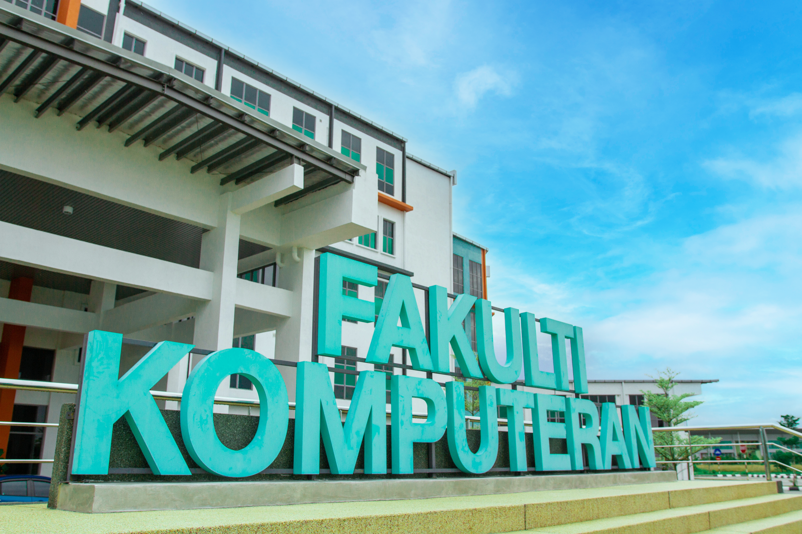

Faculty of Computing is formerly known as Faculty of Computer Systems & Software Engineering established on 16 February 2002 to produce knowledgeable, high skilled and competitive graduates within the area of software engineering, system and computer network. At the beginning, the faculty had two fields which are Software Engineering and Networking. The faculty has also embarked on research and development activities in the area such as information systems, software engineering, computer systems, communication systems, graphic and multimedia technology and cyber security to produce technologies that are relevant to the needs of industries.
The faculty provides the folowing eight programs: